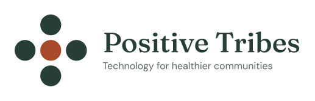

Technology for healthier communitiesToo many nonprofits are held together by late nights, sticky notes and whatever lives in the founder's head. That works until a key person leaves, a funder asks for numbers, or demand doubles. Then the people you serve are the ones who wait. Positive Tribes, a nonprofit ourselves, builds the exact tool your team needs, hosts it and supports it, at a price a nonprofit budget can handle. You see a working mock-up in days and go live in weeks, with no IT staff required and often for less than you pay for software today.
Tell us the one task that keeps your team from the people they serve. We'll deliver a fix in days.
Who we are
Most nonprofits can't afford a development team, and off-the-shelf software rarely fits how they actually work. Positive Tribes closes that gap. Our founder spent years as a Salesforce solutions engineer working with some of the largest organizations in healthcare. We use AI-assisted development to bring that level of delivery to small and mid-size nonprofits anywhere in the US, especially those with no IT staff.
What we do
Custom tools shaped around your programs: scheduling and registration, intake and case tracking, volunteer and donor management, reporting, dashboards, and connections to systems you already use such as Salesforce.
We run it for you. No servers, accounts, security patches or updates for your team to manage. Built on modern, low-cost cloud infrastructure.
A real help desk when someone has a question. Your tool keeps getting better after launch, with small improvements shipped continuously.
What changes for your nonprofit
Replace spreadsheets, duplicate entry and manual reports with one tool. Staff time goes to people, not paperwork.
Reporting across every program and location, ready when a funder or board asks for it.
One partner for the whole job. No hand-offs, no vendors to coordinate.
Stop paying for per-seat licenses and features you don't use. One tool, hosted and supported for less.
See a clickable mock-up before you commit. Build in small phases you test along the way. No big upfront bet.
We're a nonprofit too. Proven pieces from past builds are reused, so every new partner starts further ahead.
How it works
Tell us who you serve and what's getting in the way. No polished brief needed.
Click through a working prototype with your team and agree on what's needed before anything is built.
Test each phase as it lands. We launch it, host it and keep improving it.
Who it's for
Small to mid-size nonprofits · Anywhere in the US · Outgrowing spreadsheets or a tool that doesn't fit · No in-house IT · Health, recreation, youth, community and more
Positive Tribes is a 501(c)(3) nonprofit in Golden, Colorado. EIN 99-2221407.